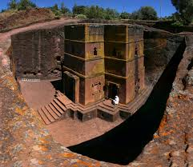
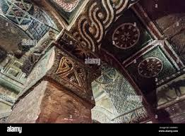

Gallery


Lalibela is a town in the Amhara Region of Ethiopia, famous for its rock-cut monolithic churches.
The whole of Lalibela is a large antiquity of the medieval and post-medieval civilization of Ethiopia.
Lalibela is one of Ethiopia's holiest cities, second only to Axum, and a center of pilgrimage.
The churches of Lalibela were hewn from the living rock to
house the faithful after Muslim conquests halted Ethiopian pilgrimages to the Holy Land. Lalibela, revered as
a saint, is said to have seen Jerusalem and then attempted to build a new one as his legacy. Most were carved downwards
from the rock with roofs at ground level, some stand in open quarried caves, and a number occupy caverns. The churches were not
constructed but rather excavated – each one was created by carving out the surrounding rock.
Dry season with pleasant temperatures
Oct - May
Best for visiting, comfortable weather
Jun - Sep
Heavy rains, fewer tourists
22°C
Low Rainfall
24°C
Low Rainfall
20°C
High Rainfall
21°C
Low Rainfall
The most famous of Lalibela's churches, carved in the shape of a cross.
1-2 hours $50
Complex of six interconnected churches carved from rock.
2-3 hours Included in ticket
Mountain monastery with panoramic views.
3-4 hours (with hike) $10
Cover shoulders and knees when visiting religious sites.
Ask permission before photographing people or inside churches.
Be quiet and respectful during religious ceremonies.
Experience traditional injera and coffee ceremonies.
Support the local economy and learn authentic history.
Always remove shoes before entering churches.
642 km (8-10 hours by road)
Experience Lalibela
$150-$200
Budget accommodation, local transport, basic meals
$250-$350
Mid-range hotels, guided tours, restaurant meals
$500-$800
Luxury lodges, private guides, premium experiences
* Prices per day per person
Amhara Region
October to March
Hotels & Lodges Available